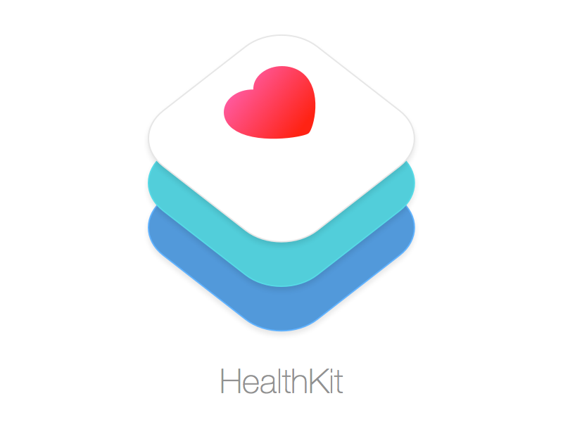

Research
Mobile Applications
With more and more fitness and health devices being available on the market today, big technology companies such as Google, Apple and Samsung are building health platform apps that are able to aggregate data from these devices. The reason for building these health platform apps are to provide users a way to store these datas into a single app, which enables them to have a complete picture of their health and fitness habit.
An example of how such platform works will be Google's Android-based, GoogleFit. GoogleFit allows different apps and devices such as RunKeeper and MyFitnessPal to directly sync its data into GoogleFit using a single set of APIs. GoogleFit also uses sensors in the user's mobile device to record physical fitness activities, such as walking or cycling, which are then measured against the user's fitness goals to provide a comprehensive view of their fitness.
A more detailed research have been conducted among several other apps and is shown below in the table
| HealthKit | GoogleFit | Samsung S health | Nudge | Healthy Target |
|---|---|---|---|---|
|  |
 |
|
|
|
| There has been a great deal of interest in Apple's new Health app (comes installed on the iPhone 6) and HealthKit, their software platform for storage and aggregation of a user's health data, allowing all of it to be stored in one secure place. The Health app can accept data from other apps and users' input, organizing and displaying it in an easy-to-read dashboard format. Some popular apps that work with HealthKit include Jawbone UP, MyFitnessPal and Run with Map My Run+. There have been problems with the release of HealthKit and iOS8, but they appear to have been corrected and there are numerous HealthKitenabled apps now available for users. |
Google also recently announced their Android application, Google Fit, as heir digital platform for tracking and aggregating data from wearable devices. Google Fit will provide a set of common application programming interfaces (APls) that will allow developers to create software that will incorporate data from various devices, including smartphones. Users can also input their own data enabling Google Fit to display a more complete view of their health activities. Another feature of the APls enables developers to tap into data and use it to recommend health tips for the user. Apps already using GoogleFit include Noom and Nike Fuel, and additional partners include Adidas, Polar, RunKeeper and WiThings. |
Samsung S Health is described as a personal wellness application that collects and analyzes health data to assist users in maintaining a healthier lifestyle. Health is an integrated platform preloaded on the Galaxy S5 smartphone that enables nutrition, fitness and wellness tracking. Features include a built-in heart rate monitor on the smartphone, a step counter for walking, and an exercise monitor for running, cycling, and hiking. The application is compatible with a number of third-party healthcare sensors such as blood glucose meters, blood pressure monitors and body composition scales. The collected data can be displayed in graphs and tables to provide a picture of the user's health in an easily understandable format. The latest update to the S Health app allows users to track stress levels using the heart rate sensor on the Galaxy S5. However, there is some question as to what is actually being measured to indicate stress levels and the company has not officially provided more details. Samsung S is the first health app to receive clearance from the FDA and they have announced a multi-year partnership Cigna. |
Nudge is a standalone aggregator to help users manage different health tracking devices and wearables. Nudge currently syncs with MapMyFitness, Moves, Runkeeper, Strava, Fitbit, Jawbone UP, and Sleep. It also allows users to manually input other related data such as the amount of water they drink, food intake, their active hours and number of hours asleep. The app then provides the user with a visual snapshot of their overall health. Nudge is available for both iOS and Android devices. |
Healthy Target from WebMD, allows users to manually input biometric data or upload it from a variety of devices, including Fitbit, Jawbone UP, Withings and iPhones. Healthy Target offers a slightly different service as it draws from the medical information on their website to provide personally designed insights for the user. The user may select goals such as losing weight, eating healthier, or controlling blood sugar. Then depending on the fitness data provided by the user, Healthy Target may recommend lifestyle changes to help the user reach their goals. |
Our Opinion
Since the major leaders of health aggregation apps are GoogleFit and HealthKit, our task was to choose between both to see which one was better for collecting the data we need. There are some significant differences between GoogleFit and Apple HealthKit, which are the data they collect, and how its collected.
Both GoogleFit and HealthKit covers the amount of steps taken and distanced covered automatically. However GoogleFit has an advantage over HealthKit in that it also tracks the amount of calories expended by the user while HealthKit doesn't. GoogleFit also automatically logs user's running and cycling data.
HealthKit on the other hand, allows users to input a wide variety of health data ranging from nutrition, reproductive health, to vitals. HealthKit data visualisation is also much nicer and neater with graph being shown. However, Apple, as usual, is a little strict with the way how these health data are shared between different app.
Our Conclusion
Although Apple's HealthKit allows users to view a wide variety of health data, most of the health data have to be manually input by the user.
However, as our aim for this project is to collect health and fitness data that could be input automatically from a range of fitness device, Apple platform might not be the friendlies among some Android Wear devices and app.
After much consideration, we decided to go for Android's GoogleFit because there were more devices that were more Android friendly instead of Apple.